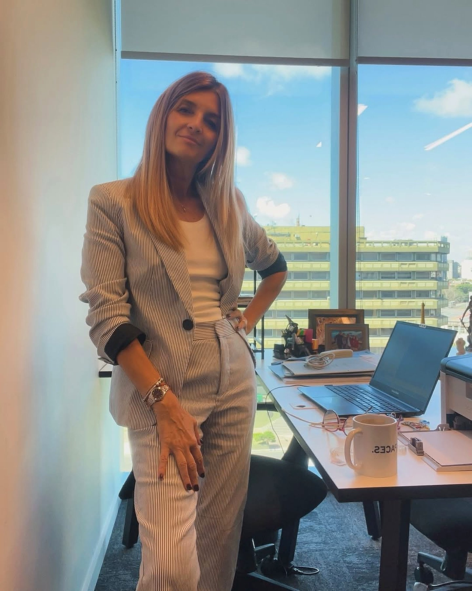
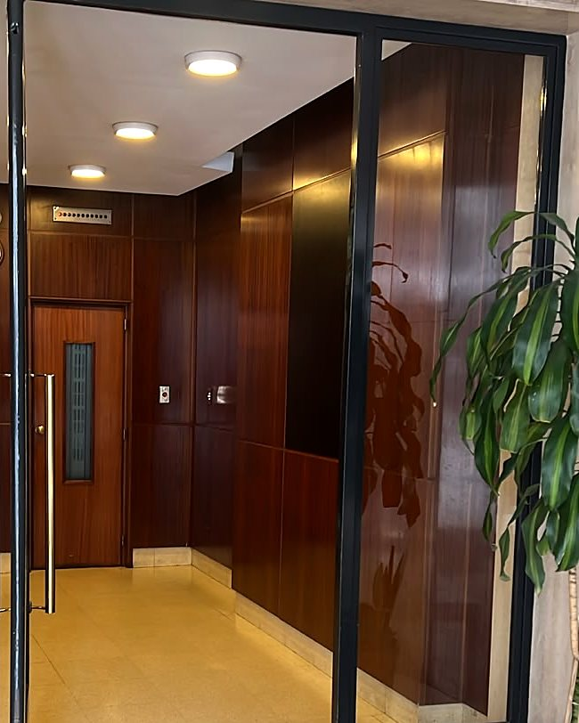
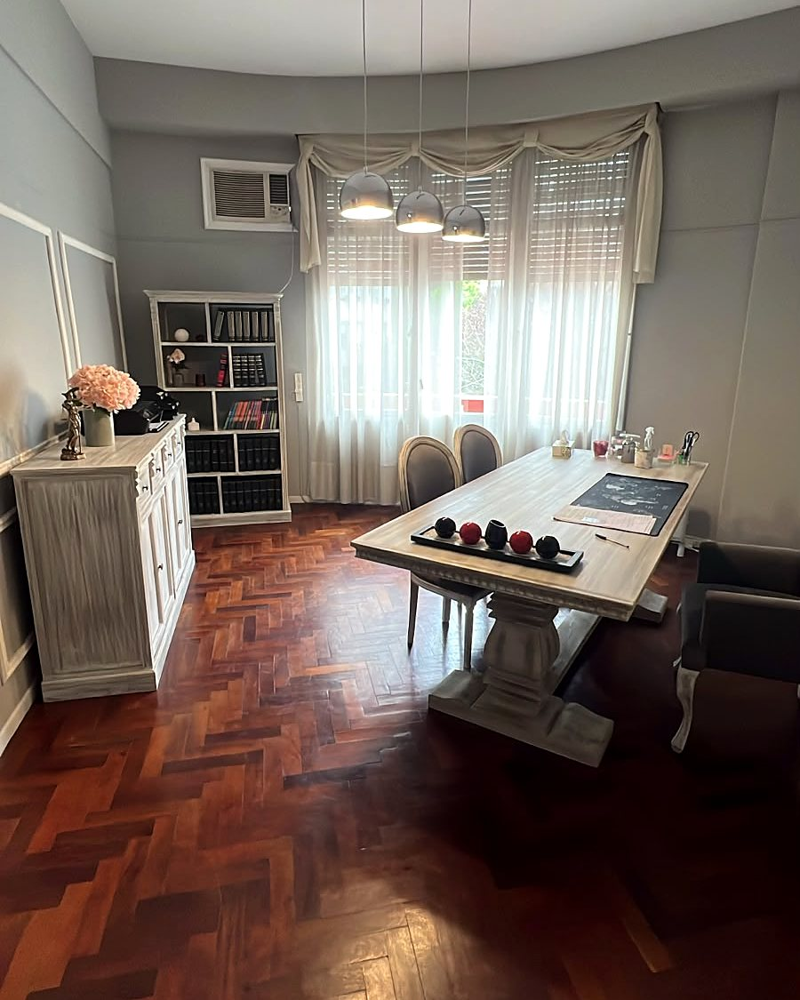
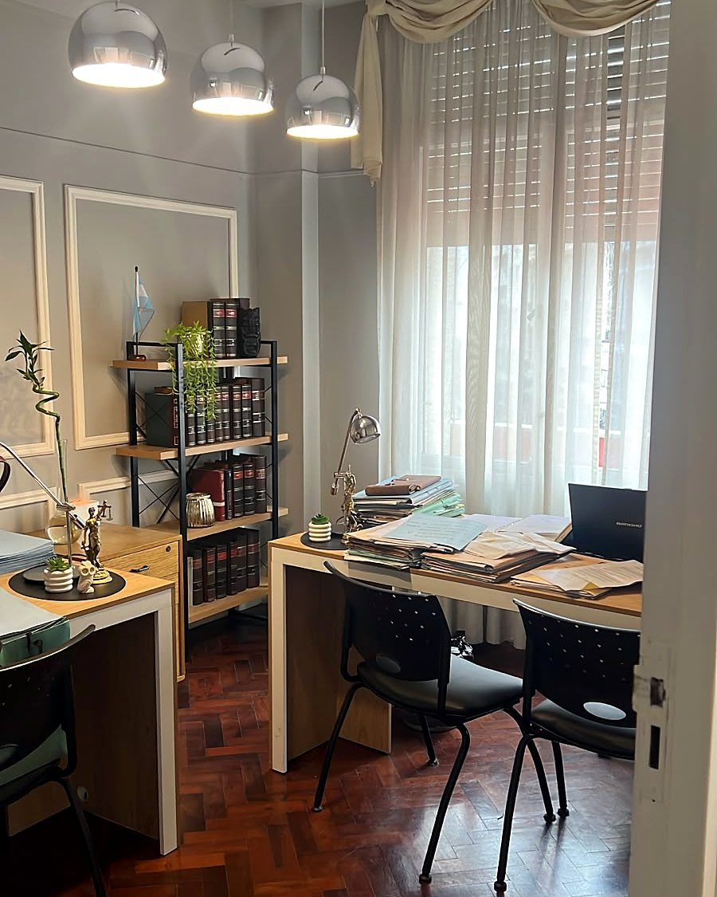

“Fui por mi divorcio sin saber por dónde empezar. Silvana me explicó qué cosas había que resolver y cuáles no tenía sentido seguir discutiendo. Me sirvió mucho esa primera charla.”
FR
Federico R.Cliente del estudio
Familia
Más de 25 años acompañando a personas, familias y empresas en Buenos Aires. Te explico tu caso en tu mismo idioma y lo llevo de principio a fin.
Cada trámite tiene su página con plazos, documentos y cómo se cobra, para que sepas qué esperar antes de llamar.
De común acuerdo o unilateral, con acuerdos sobre hijos y bienes.
2 a 4 mesesVer trámite →Denuncia, medidas de protección urgentes, exclusión del hogar y cuota.
Consulta confidencialVer trámite →Declaratoria de herederos, inscripción y venta de bienes.
4 a 6 mesesVer trámite →Choques de auto, moto o peatón y reclamo al seguro.
3 años para reclamarVer trámite →Seis materias, una misma forma de trabajar: escuchar, explicar claro y llevar el caso con compromiso hasta el final.

Divorcios, cuota alimentaria, cuidado personal, régimen de comunicación y divorcios del exterior.
Ver más
Denuncia acompañada, medidas de protección urgentes, exclusión del hogar y cuota alimentaria para vos y tus hijos.
Ver más
Sucesiones con o sin testamento, declaratoria de herederos e inscripción de bienes, con pago en cuotas.
Ver más
Choques de auto, moto o peatón y mediaciones con aseguradoras para cobrar sin llegar a juicio.
Ver más
Defensa ante falsas denuncias y acompañamiento en violencia familiar. Justicia no es creer sin prueba: es investigar y probar.
Consultar
Diagnóstico Integral de Riesgo Empresarial, contratos, negociaciones, conflictos societarios y protección del patrimonio.
Ver másRequiere intervención inmediata. Sentirte acompañada desde lo legal es el primer paso para terminar con la situación. Existen medidas urgentes para protegerte a vos y a tus hijos.

La Dra. Silvana Alejandra Calcagni está al frente del Estudio Jurídico Calcagni. Abogada con experiencia en derecho civil y asesoría legal, se especializa en sucesiones internacionales y asuntos transfronterizos, investigaciones patrimoniales, protección de activos y litigios en el extranjero, y en la defensa de empresas.
“Mi forma de ejercer la profesión siempre estuvo basada en acompañar a cada cliente con compromiso, discreción y una visión estratégica, porque detrás de cada caso hay personas, familias, proyectos y años de esfuerzo que merecen ser protegidos.” En 2026 Editorial Perfil la convocó como estudio jurídico destacado en el programa «Culpable o inocente» de Net TV.
“Buscá al abogado que te entienda, que forme un equipo con vos para resolver juntos el conflicto. Que te explique, que te atienda y que esté comprometido con tu problema.”
La Dra. Calcagni en el programa Conectando de Simphony 91.3. Escuchala y conocé su forma de trabajar antes de tu consulta: cercana, clara y comprometida con cada caso.
Ver en YouTube“Fui por mi divorcio sin saber por dónde empezar. Silvana me explicó qué cosas había que resolver y cuáles no tenía sentido seguir discutiendo. Me sirvió mucho esa primera charla.”
“Me daba mucha vergüenza contar lo que estaba pasando. Pude hablar sin sentir que me estaban juzgando. Gracias por la paciencia, sobre todo al principio que preguntaba lo mismo veinte veces.”
“Teníamos la sucesión pendiente hacía años porque siempre faltaba algún papel y la íbamos dejando. Nos pasó una lista con lo que necesitaba cada uno y pudimos arrancar. Muy conforme con la atención.”
“La aseguradora me tenía de un teléfono a otro y nadie me resolvía nada. Le llevé todo a la doctora y siguió ella con el reclamo. Tendría que haber consultado antes.”
“Consulté por un tema de visitas de mi nena. Me gustó que escuchara toda la situación antes de decirme qué hacer. Salí con varias cosas más claras.”
“La contactamos para revisar un contrato antes de sumar un socio. Nos marcó puntos que nosotros habíamos pasado por alto y tuvimos que sentarnos a conversar de nuevo. Esa revisión nos vino muy bien.”
“Nunca había tenido un problema judicial y estaba bastante perdido. Me explicó qué significaba la notificación que había recibido y cómo seguíamos. Directa para hablar, que era lo que necesitaba.”
“Llegué recomendada por una compañera de trabajo. Cuando terminó la consulta me dejó anotado lo que tenía que hacer porque yo no estaba en condiciones de acordarme de todo. Ese detalle me ayudó muchísimo.”
“Vivo afuera y necesitaba consultar por una propiedad de mis padres. Pudimos coordinar por la diferencia horaria y me aclaró qué documentación tenía que preparar desde acá. Buena atención.”
“Mi reclamo sigue en trámite, pero hasta ahora estoy conforme. Cuando hay una novedad me avisan y si algo no lo entiendo lo puedo preguntar. Para mí eso cuenta mucho.”
Vamos a donde está el cliente y le hablamos en su mismo idioma: no queremos que aprendas palabras complicadas, queremos que nos entiendas. Respuestas seguras, rápidas y creativas.
Me contás qué pasó, en el estudio o por videollamada, y reunimos toda la documentación que tengas.
Te explico qué opciones hay, cuánto puede tardar y cuánto cuesta, con un convenio de honorarios por escrito y en cuotas.
Mediación, acuerdo o juicio. Te mantengo informado de cada novedad hasta el final de tu caso.
Elegí la modalidad que te quede más cómoda y coordinamos el turno por WhatsApp.
Elegí el tema, contanos brevemente qué pasó y se arma un mensaje listo para enviar por WhatsApp.
Si vivís en España, Italia, Estados Unidos o cualquier otro país, podemos llevar tu trámite a distancia, sin que tengas que viajar.
Asesoramiento y defensa judicial para clínicas, constructoras y empresas de la industria alimenticia. Prevenimos contingencias contractuales y societarias para reducir la exposición económica y el riesgo operativo, con respuestas inmediatas ante conflictos judiciales o inspecciones administrativas.
Llega con el juicio iniciado, la carta documento recibida y la contingencia ya convertida en costo.
Revisa, ordena y previene. Somos estrategas, y eso es lo que nos identifica.
Una auditoría completa de tu empresa con una matriz de riesgo y la estimación económica de cada contingencia.
No todo es «conflicto de pareja». Hay límites que no se pueden cruzar, y es momento de ordenar la situación por tu hijo.
Leer nota
Qué significa la medida que te notificaron, por qué hay que cumplirla y cómo presentar un descargo claro y con pruebas.
Leer notaQué medidas se pueden pedir, cuánto tardan y por qué sentirse acompañado desde lo legal es el primer paso.
Leer notaSi tu duda no está acá, escribinos por WhatsApp.
Antes de empezar firmamos un convenio de honorarios por escrito, con lo que incluye y cómo se paga. En la mayoría de los casos se puede pagar en cuotas.
Sí. La consulta puede ser por videollamada y los papeles se envían en foto o escaneados. Muchos trámites judiciales hoy son digitales.
Sí. Atendemos casos de la Ciudad y de la Provincia de Buenos Aires, en forma presencial o por videollamada.
Sí. Sucesiones, divorcios y reclamos se pueden hacer a distancia con un poder firmado en el consulado o con apostilla.
No firmes ningún acuerdo sin asesorarte, y andá al médico aunque no veas lesiones. El reclamo por daños prescribe a los tres años.
Si estás en peligro llamá al 911. Si no, escribinos: la consulta es confidencial y te acompañamos a hacer la denuncia y pedir medidas de protección.
Si hay acuerdo sobre bienes e hijos, suele resolverse en dos a cuatro meses. Si no, el divorcio sale igual y lo demás se discute aparte.
Estamos en el Edificio Libertad, sobre Diagonal Norte, a dos cuadras del Obelisco. Te recibimos en un espacio cálido y reservado, pensado para que puedas contar lo que te pasa con tiempo y sin apuro. Si preferís, la consulta también puede ser por videollamada.



WhatsApp · Atención con turno, presencial o virtual
Escribir por WhatsApp